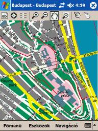
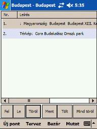
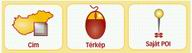
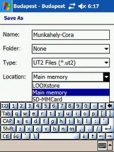
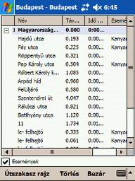
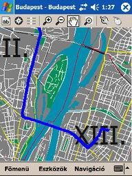

3.1.2. Térkép
A "Térkép" ikon megnyomásával
a program a térkép oldalt tölti be, ahol a "Térképkezelõ
eszköztár" -ba illetve az "Eszközök
menü" -be lévõ ikonok segítségével, nézegetheti, kereshet
objektumokat, Saját POI-kat helyezhet el a térképen.

Az alsó menüsoron idíthatja el a a "Fõmenü"-t,
"Eszközök"
menüt, és a "Navigáció"
menüt.
3.1.3. Tervezõ
A "Tervezõ" ikonra nyomva
a tervezõ oldalra jut, ahol elõre megtervezheti, elmentheti, betöltheti útvonalait.

Az "Új pont"-ra kattintva
lehet a tervezõbe célpontokat bevinni.

A megjelenõ ablakban kiválaszthatja hogy "Cím",
"Térkép",
"Saját POI"
alapján viszi e be a célpontokat a "Tervezõ"-be.
A "Médium" felhasználók ezen lehetõsséggel
nem élhetnek ezért az ikon szürkén jelenik meg.
Az indulási pont a lista ablakban a legfelsõ sorbaan
van, az érkezési célpont a lista ablak utolsó sora.
A már bevitt célpontok kijelölése az adott célpontra
való kattintással történik. Ekkor a program sötétkék keretbe foglalja a címet.
A "Fel" gombra nyomva, az
elõzõleg kijelölt címet egy sorral feljebb viheti a lista ablakban.
A "Le" gombra nyomva, az elõzõleg
kijelölt címet egy sorral lejebb viheti a lista ablakban.
A "Töröl" gombra nyomva,
az elõzõleg kijelölt címet kitörölheti a lista ablakból.
A
"Ment" gombra nyomva, az ablakban látható címeket elmentheti.
A
"Tölt" gombra nyomva az elõzõleg elmentett útvonalait
töltheti be a tervezõbe.
A
"Mind töröl" gombra nyomva a listaablakban lévõ
összes sor törlõdik.

A "Name" mezõbe írja be az
elmentendõ út nevét (célszerû az útvonalra jellemzõ nevet választani).
A "Location" mezõben válassza
ki a memória kártyáját (SD, CF), mert esetleges Hard reset esetén nem veszti
el az adatait.
Az "OK" gombot megnyomva
a program elmenti az útvonaltervet.
A "Cancel" gombot megnyomva
visszaléphet a "Tervezõ"-be.
A "Tervezõ ablak" menü sorának
gombjai:
A "Mutat" gombra nyomva,
az elõzõleg kijelölt címet a program megmutatja a cím helyét a térképen.
A "Bezár" gombbal visszatér
a "Fõmenübe".
A "Tervez" gombra nyomva
elindul az útvonal keresése.
A keresés befejeztével megjelenik a "Szöveges
eredmény" ablak.

A „Név” oszlopban állomásai
nevét,
a „Távolság” oszlopban a szakaszok
rész távolságát illetve, alul az összes távolságot kilométerben,
az „Idõ” oszlopban a távolságok
rész illetve összesített idõ adatait,
az
„Események”oszlopban az útszakaszokon
lévõ útirány változásokat láthatja. (alap esetben
ez az oszlop üres csak akkor töltõdik fel, ha az események négyzet ki van
pipálva).
Az
„Útszakaszrajz” gombbal megtekintheti
az útvonal ajánlatot a térképen.
A
„Törlés”gombbal törölheti
az útvonalajánlatot.
A
"Bezár" gombbal visszatér a navigáció menübe.
Az
„Események”négyzetet kipipálva
feltöltõdik az események oszlop.
Az „Útszakaszrajz”gombot
megnyomva a térrképi oldalra ugrik a program, ahol megtekintheti a tervezett
útvonalat, melyett vastag kék vonallal jelöl a program.

Az
útvonalat megtekintheti mind Magyarország, mind település térképeken, nagyítási
mértéktõl függõen.